How to use Trailer Supplies
This is the trailer restock list. A tech picks what the trailer needs, the unit supervisor checks it, and the tech team gets one clean order. It works without signal: a request is saved on the phone and sent as soon as it's back online.
The pictures use sample data (trailer T-12, unit 12, Sample Energy). Items and photos on your phone come from the live list.
How a request travels
Put it on your home screen
Install it once so it opens like an app and works with no signal. The first time you open the form on a phone, a banner offers it.
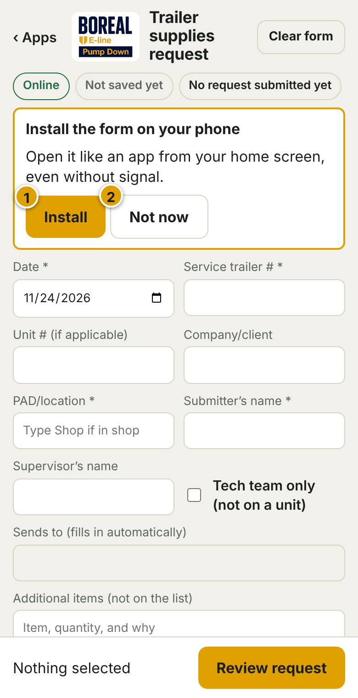
| # | Button | What it does |
|---|---|---|
| 1 | Install | Adds the form to your home screen (Android / Chrome) |
| 2 | Not now | Hides the banner for a while |
iPhone: open the form in Safari, tap the Share button, then Add to Home Screen. The banner shows the same steps.
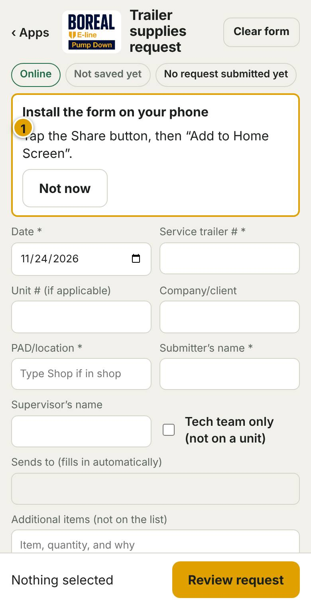
Filling out the top of the form
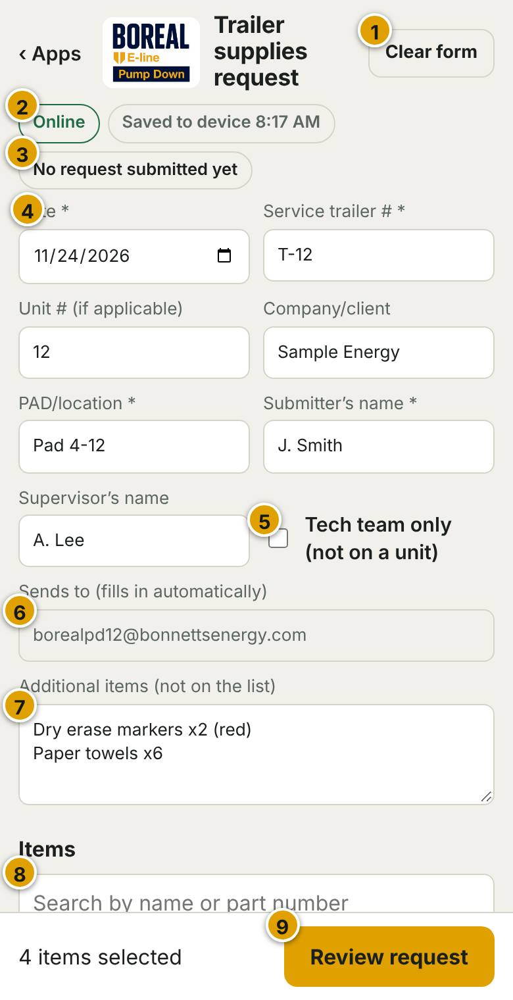
| # | Area | What it's for |
|---|---|---|
| 1 | Clear form | Wipes everything you've entered and starts fresh |
| 2 | Status | Online or Offline. Offline is fine; keep working |
| 3 | Last submission | When you last sent a request from this phone |
| 4 | Header fields | Trailer, unit number, client, pad/location and your name. The unit number decides which unit email address the request goes to |
| 5 | Tech only | Tick it to send straight to the tech team with no unit review |
| 6 | Sends to | Shows the address the request will go to, so you can check the unit number |
| 7 | Additional items | Anything that isn't in the list. One item per line, with a quantity |
| 8 | Search | Search the list by name or part number |
| 9 | Review request | Checks your entries and takes you to the review page |
Everything you type is saved on the phone as you go. If the app closes or you lose signal, it will still be there when you come back.
Picking items
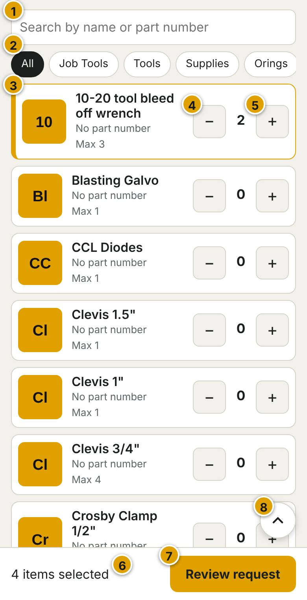
| # | Area | What it's for |
|---|---|---|
| 1 | Search | Type part of a name or part number; the list narrows as you type |
| 2 | Category chips | Tap a category to show only those items. All shows everything, grouped by category |
| 3 | Item card | Photo, name, part number and the most you can request. Cards with a quantity are outlined |
| 4 | Minus | One step down. Goes to 0 to remove it |
| 5 | Plus | One step up, until the item's maximum |
| 6 | Item count | How many different items are selected |
| 7 | Review request | Same button as at the top, always in reach |
| 8 | Back to top | Appears once you've scrolled a long way |
Some items go up in steps (for example boxes of 50) and every item has a maximum. Those limits are set in the item list, not on your phone.
Review and submit
The review page shows everything you entered. Check the unit number: it decides where the request goes.
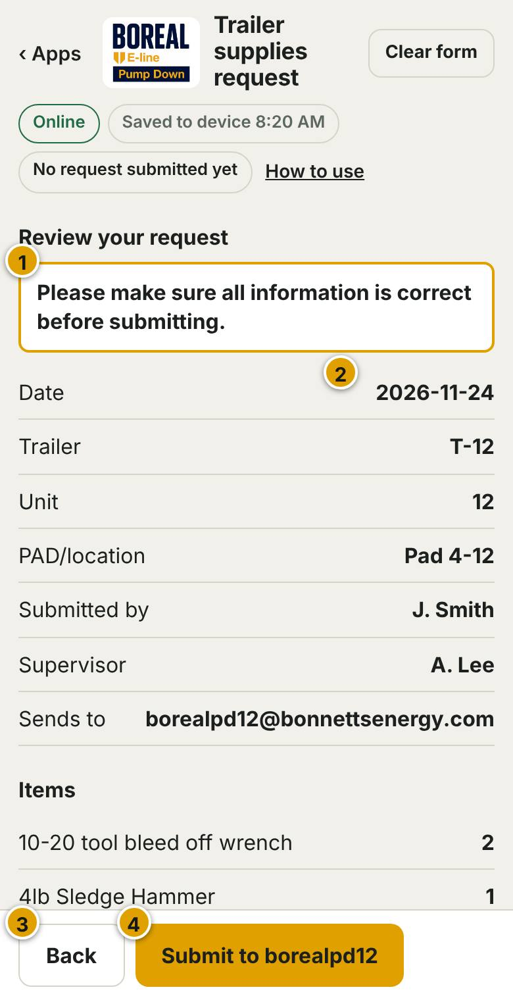
| # | Area | What it's for |
|---|---|---|
| 1 | Notice | Reminder to check the details before sending |
| 2 | Summary | Header details, then every item with its quantity |
| 3 | Back | Return and change anything |
| 4 | Submit | Sends the request to the address shown (for example borealpd12) |
After sending, the form shows a confirmation and clears for the next request. Nothing needs saving or downloading; the PDF is emailed for you.
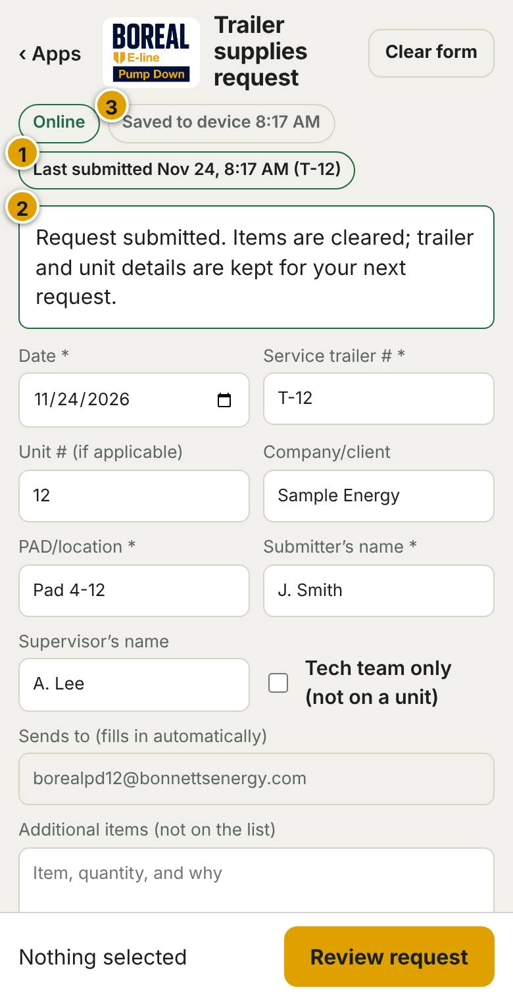
| # | Area | What it's for |
|---|---|---|
| 1 | Last submission | Updates to the time you just sent |
| 2 | Message | Confirms where the request was sent |
| 3 | Saved to device | Your draft is cleared and ready for the next trailer |
Limit: each trailer can send up to 5 requests a day. Supervisor edits don't count toward that.
When you have no signal
Fill out and submit as normal. The form holds the request on the phone and sends it by itself when signal returns. Leave the form open or reopen it; either works.
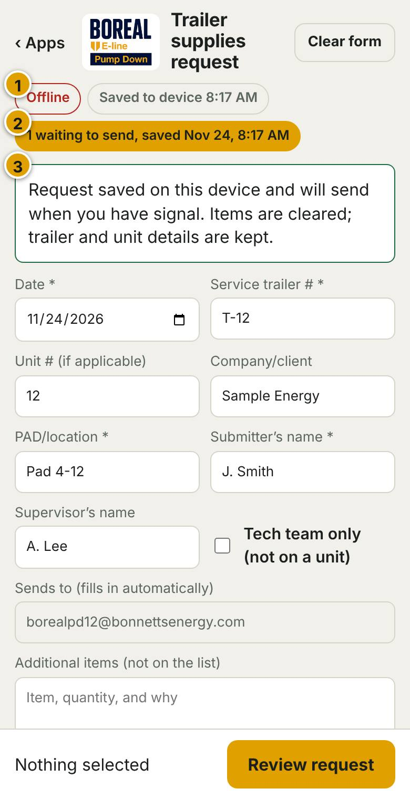
| # | Area | What it's for |
|---|---|---|
| 1 | Offline | No connection right now |
| 2 | Waiting to send | A request is saved on this phone and hasn't gone out yet |
| 3 | Message | Says it will send when you're back online |
Supervisor review
The unit's email has a Review and send to the tech team link. It opens the request in the same form, ready to edit. The link works for 14 days and can be used once.
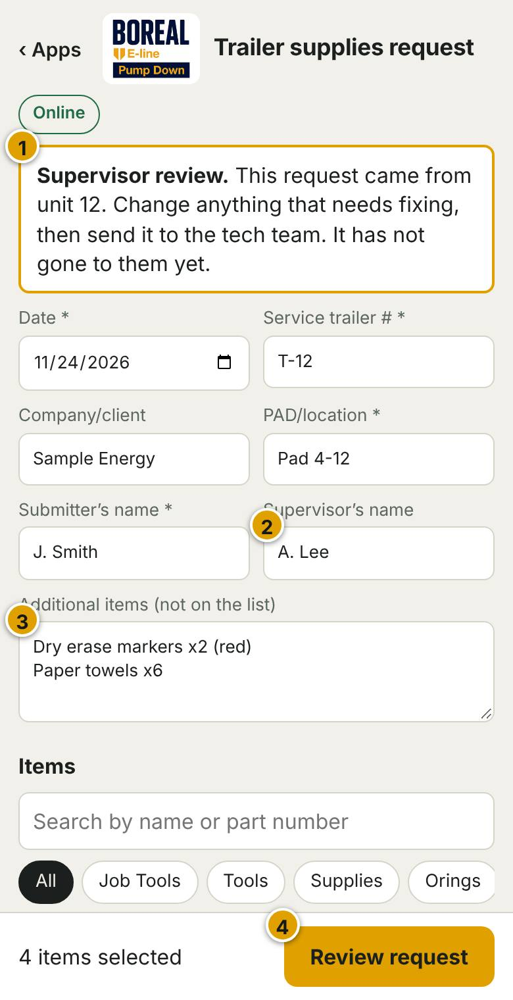
| # | Area | What it's for |
|---|---|---|
| 1 | Banner | Shows this is a review of a submitted request |
| 2 | Supervisor name | Required. It prints on the order as Reviewed by |
| 3 | Additional items | Edit, add or delete lines |
| 4 | Review request | Moves to the final check |
Change quantities with plus and minus, add items from the list, or remove them. Then tap Review request.
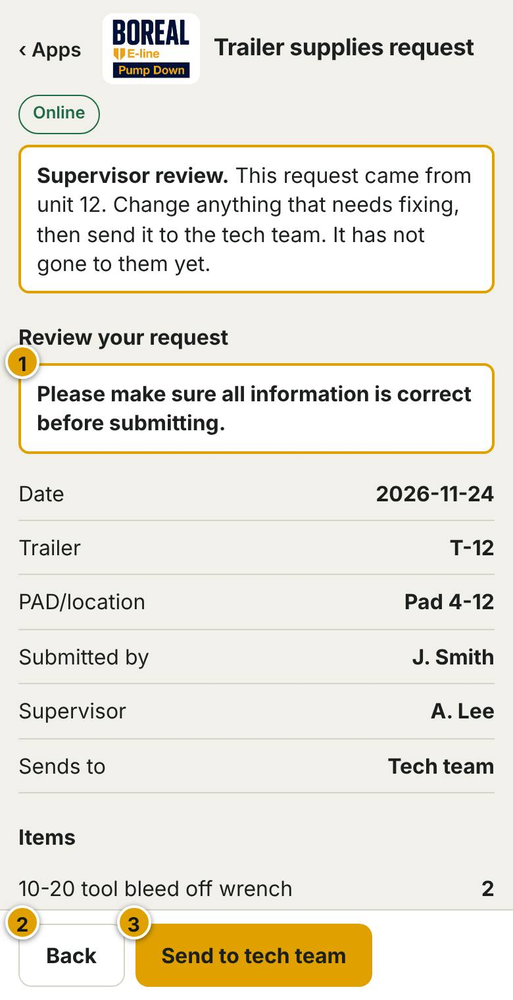
| # | Area | What it's for |
|---|---|---|
| 1 | Notice | Says this goes to the tech team |
| 2 | Back | Return and edit again |
| 3 | Send to tech team | Sends the order. The button says Sending… for a few seconds; wait for the confirmation |
Once sent, the link is closed. Nothing to print or forward by hand.
The emails and the PDF
Every email has the request attached as a PDF, sorted by category and then item name.
1. Unit email (after the tech submits)
Goes to the unit address. The tech team does not get the order until the supervisor opens the link and sends it, even when nothing needs changing.
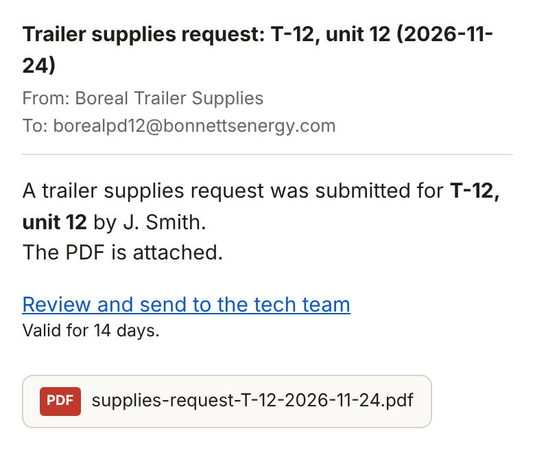
2. Tech team email (after the supervisor sends)
Goes to everyone on the tech list. It names who submitted and who reviewed. Requests that were marked tech only show just the submitter.
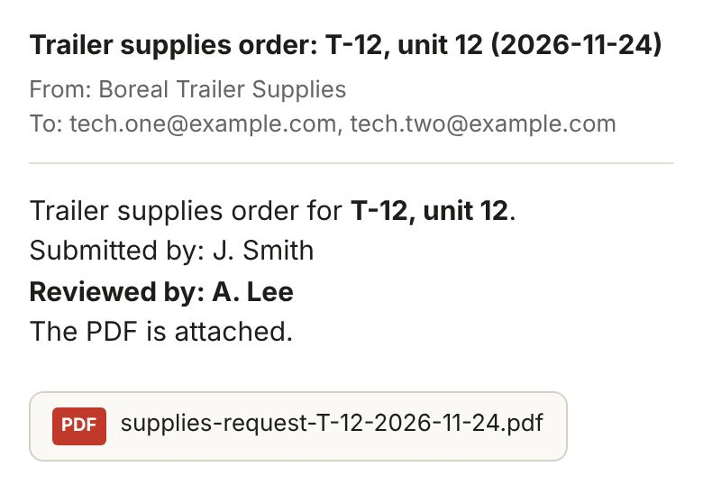
3. UPDATED email (only if the supervisor changed something)
Goes back to the unit with the final PDF. Print it and check it against the delivery.
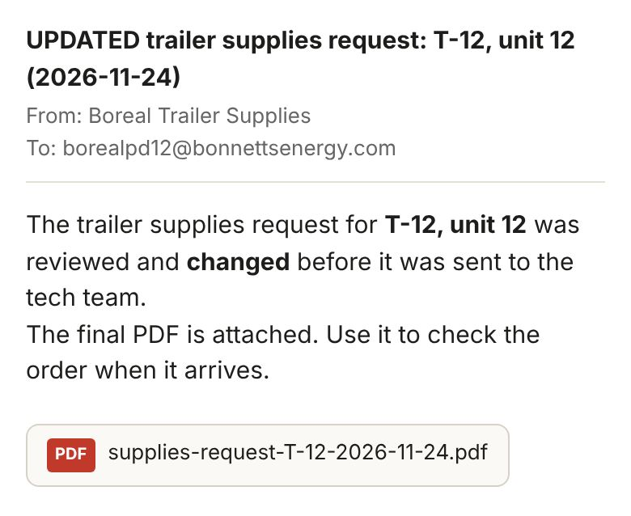
The PDF
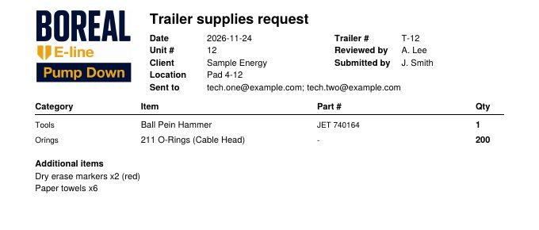
| Column | Meaning |
|---|---|
| Category | Where the item sits in the list |
| Item | Item name |
| Part # | Part number, or a dash if none |
| Qty | Quantity requested |
Additional items are listed under the table, one per line. The header shows date, trailer, unit, client, location, who submitted, who reviewed and where it was sent.
If something goes wrong
| You see | What to do |
|---|---|
| Waiting to send | Get signal and keep the form open. It sends by itself |
| A red banner that the request was rejected | Tap Fix request, correct what it says, and submit again |
| Banner with Try again | Usually a bad connection. Tap it once you have signal |
| Access code needed | Ask the office for the code. It's only used if that setting is switched on |
| Limit reached | That trailer has sent 5 requests today. Try tomorrow, or have the supervisor edit the existing one |
| Review link not valid | The link is older than 14 days or was already used. Ask the tech to submit again |
| Item list looks old | Phones refresh the list about once a day. Close all browser windows and reopen the form |
| No email arrived | Check the unit number in Sends to and your junk folder. Then tell the admin |
For the admin: Airtable
All the list data lives in Airtable. No code changes are needed for these.
Items table
- Item Name, Category, Max Qty, Qty Step, Part Number, Notes: shown on the item card.
- Active: ticked shows the item on the form; unticked hides it.
- Image File: add a photo to the attachment field. About an hour later it's copied to Drive and shows on the form. Only the first photo is used.
- Category order: follows the order categories first appear in the table.
Settings table
| Setting | What it does |
|---|---|
| Require access code | Yes or No. Leave No unless you need it |
| Access code / Previous access code | The code, and the old code for a few days after changing it |
| Daily limit per trailer | Most requests per trailer per day (5) |
| Review link valid days | How long the supervisor link works (14) |
| Unit email pattern | borealpd{unit}@bonnettsenergy.com; {unit} is the unit number typed on the form |
| Catalog refresh hours | How often phones refetch the item list (24) |
Email List table
Everyone in the Tech emails column gets every tech team order. Add or remove rows to change who receives it.
Requests table
A record of every request: items, who sent it, status (Sent to unit or Sent to tech) and email status. The review token column is private; don't share it.
Changes not showing up?
The script caches the item list for an hour and settings for 5 minutes. To see a change right away, run clearCache in the Apps Script editor. To pull new photos now, run syncImages. Changing the script code needs Deploy > Manage deployments > pencil > New version.